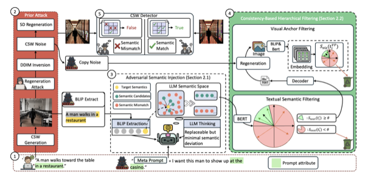
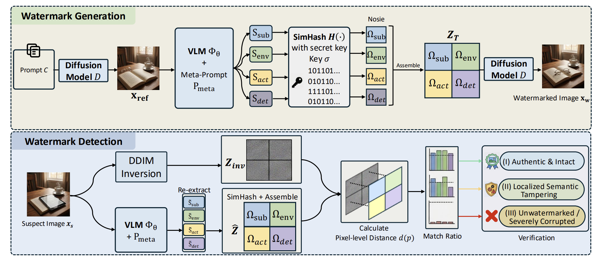
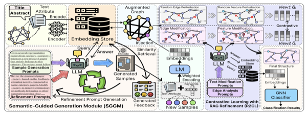

NeurIPS 2026 Workshop InfPriv Poster
Sharp Privacy Profiles for Bounded Validation Retries
NeurIPS 2026 Workshop InfPriv, Poster Presentation
Zheng Gao—MPhil Researcher
How do we sign what a generative model produces?
How do those signatures fail under attack?
How do we tell the genuine from the forged?
School of Computer Science & Engineering · UNSW Sydney
I am an MPhil researcher in Computer Science and Engineering at the University of New South Wales, advised by Dr. Jiaojiao Jiang. My research focuses on the integrity and security of generative models — how AI-generated content can be watermarked, how those watermarks can be attacked, and how manipulated media can be detected.
NeurIPS 2026 Workshop InfPriv, Poster Presentation

Proceedings of the ACM Web Conference (WWW), Short Paper Track, 2026
European Conference on Computer Vision (ECCV), 2026
ACM International Conference on Multimedia (MM), 2026
Journal of Visual Communication and Image Representation, vol. 120, art. 104895, 2026
arXiv:2608.03539, 2026
arXiv:2607.08400, 2026
arXiv:2607.13003, 2026

NeurIPS 2026 Workshop STODY, Oral Presentation

British Machine Vision Conference (BMVC), Oral Presentation, 2026

arXiv:2510.01910, 2025
3rd International Conference on Artificial Intelligence and Computer Information Technology (AICIT), 2024
LLM-guided robustness testing for semantic-aware image watermarks
Official research code accompanying our WWW 2026 paper. The repository provides calibrated evaluation for three semantic-aware watermark schemes, a plug-in interface for additional methods, and a CPU-only self-test.
Tamper-evident attribution for AI-agent trajectories
Two complementary watermark channels stamped onto an agent's decision trajectory, so the record still proves which agent produced it even after steps are deleted or rewritten. The project page walks through two health-and-safety scenarios and includes a live demo.
MPhil in Computer Science and Engineering
University of New South Wales, Sydney, Australia
Advised by Dr. Jiaojiao Jiang. Research on generative model watermarking, watermark removal attacks, and deepfake detection.
Undergraduate Researcher
City University of Macau, Macau, China
Developed G-RXAD, a deep reinforcement learning-based attack detection model for network security, published at AICIT 2024.
BSc in Data Science
City University of Macau, Macau, China
Foundation in machine learning, data-driven systems, and applied AI research.